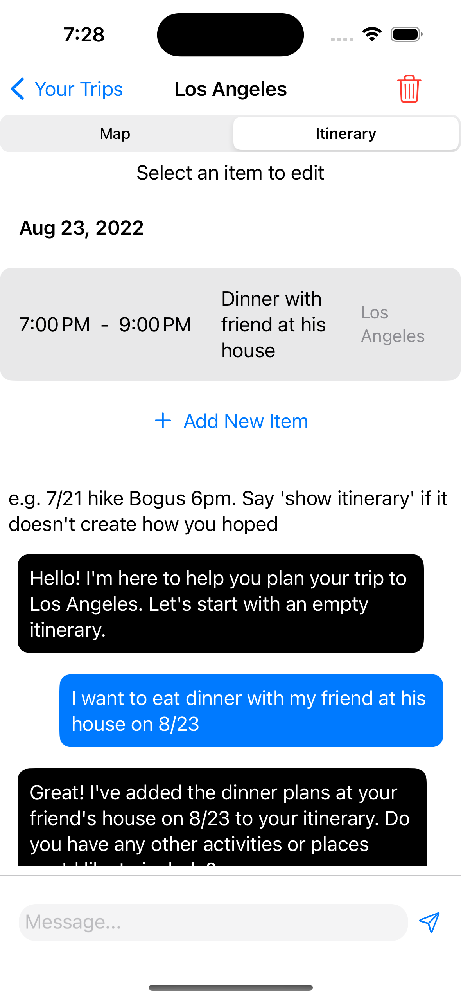
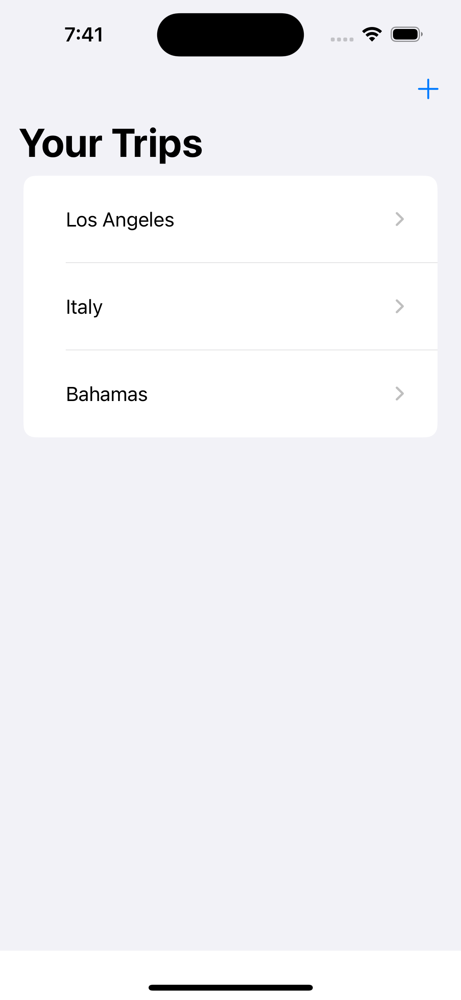
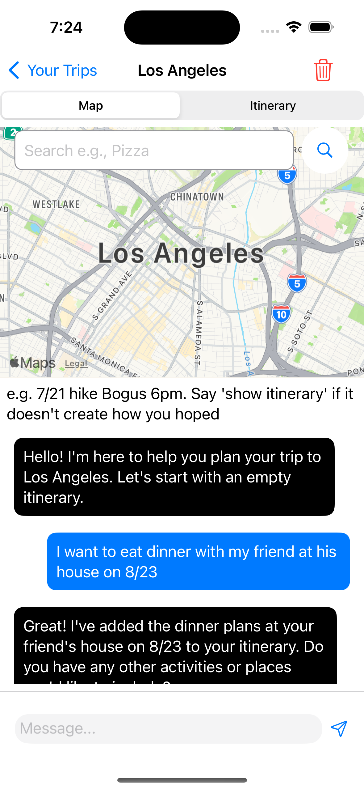
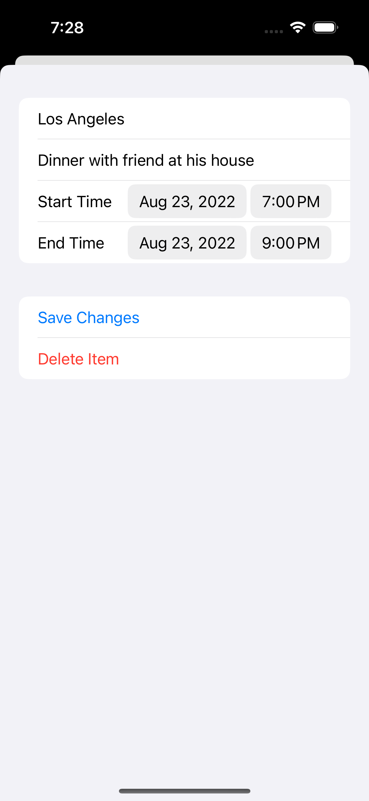

iOS application
Turn a conversation into an itinerary.
A Swift app that combines conversation, itinerary editing and maps.

The context
A problem worth solving.
Travel planning moves between conversation, a schedule and places on a map.
My contribution
What I brought to the work.
Built an iOS app that uses conversation to create and update an itinerary, with integrated map and location features. Original screens remain in the walkthrough.
The product
What it makes possible.
Original project / selected screens & walkthrough
The original project imagery and product explanation are retained here. These are historical project materials; current availability may differ.



Where it stands
The work keeps moving.
This project remains part of the earlier-work collection. The original materials show the implementation at that point in time; they are not a claim about current operation.